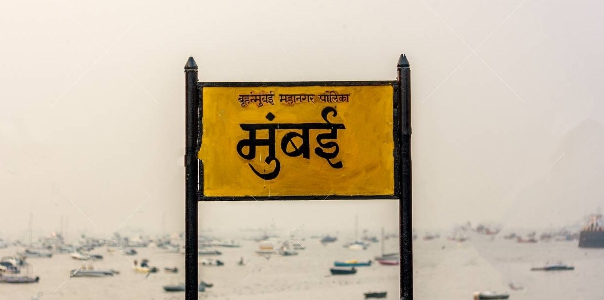
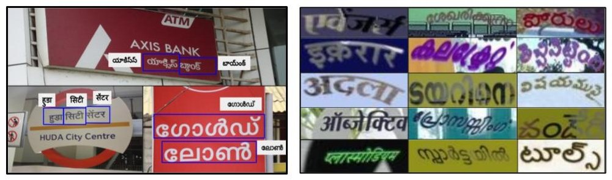
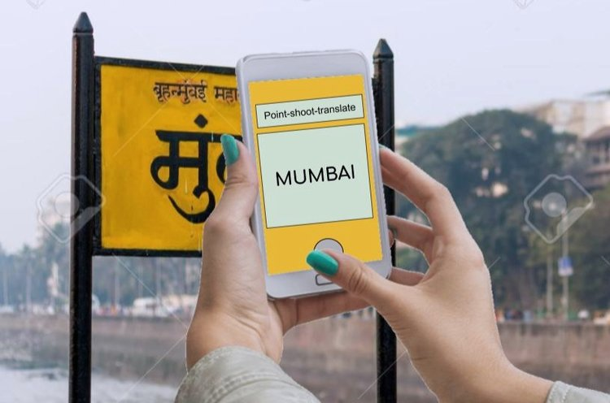
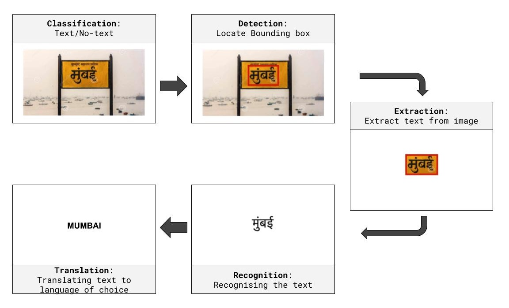
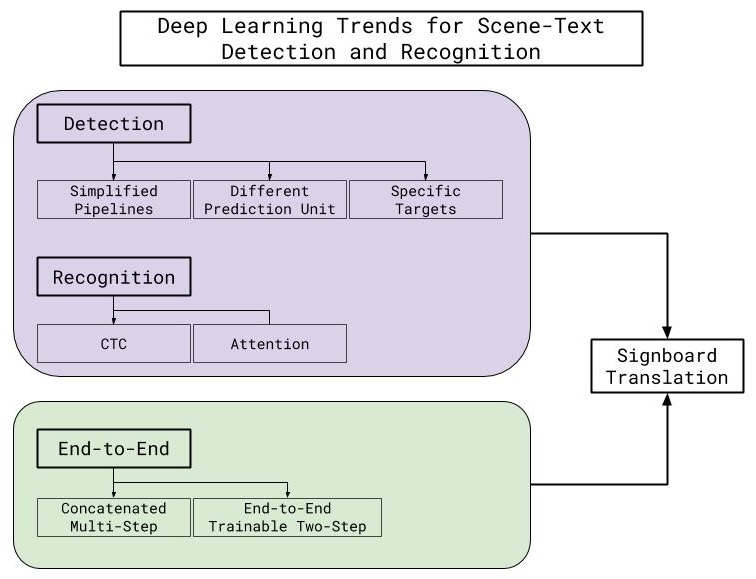

Can computer vision and natural language processing be put to transcribe sign boards on the fly making travel more accessible for all Indian languages?

Problem Statement
The goal of this project is to develop an App which translates the text written on a signboard to another language as desired by the user. The user will just point at the signboard using the camera of his/her phone and the App should then translate the text written on the signboard. We will first design a system which works for names (such as road names, city names, organisation names shop names etc.) which typically contain 1-2 words and are rarely longer than 4-5 words. We will cater to five languages in the first phase (i.e., the app can read and translate text from and to one of these five languages). In the next phase we will increase the number of languages to 15. Finally, in the last phase of the project, we will support translation of longer texts written on signboards, such as “Please do not throw garbage here”.
Why this is relevant in the Indian context
India has 22 constitutionally recognised languages written in 13 different scripts. An average traveller, on a business or pleasure trip, often gets confused by the various signboards written in an unfamiliar language in a new region. This often spoils the experience of visiting a new place and the traveler goes back with not-so-fond memories. This often leads to language tussles wherein people of region A may feel that people of region B are not considerate enough to display signboards in their language and vice versa. In reality, this is simply a logistics problem. It is just impossible to have every signboard in every city/town/village across the country written in 22 different languages. The real estate available on the signboard may allow the text to be written in 2-3 languages only. Hence there are bound to be many languages which will be left out. The resulting unfortunate, unpleasant and unproductive bitterness can easily be avoided by building better Apps. We believe that the App developed as a part of this project will allow people from different regions to read and understand text written in native languages as they are traveling across the country.
Data availability and collection
For building such an app, we need a dataset of many images containing some text written in Indian languages. Further, each image should have the following annotations:
- A bounding box indicating the region containing the text as shown in the images in the LHS figure.
- The text written inside this bounding box (i.e., a human needs to type out the text)

The first set of annotations mentioned above will help in training a an object detection which can isolate/identify the region in the image containing the text. The second set of annotations will then be used to train an engine for image-to-text translation. Finally, once we have the text we need to transliterate/translate it to the desired languages. For training such an engine we need parallel data between the two languages. More specifically, for training a transliteration engine for English-to-Hindi we need training data containing multiple English-Hindi word pairs (for example, Mumbai-मुंबई, Chennai-चेन्नई and so on). Such data can be mine from https://www.wikidata.org/. Similarly, for training a translation engine we need training data containing multiple English-Hindi sentence pairs (for example, “Please do not throw garbage here - कृपया यहां कचरा न फेंके” and so on). Such sentence parallel data is not easily available and we will have to collect such data as a part of the project. Some existing datasets for Indian language scene text detection are listed below:
- ICDAR2017
- IIIT Indian Language Scene Text (ILST) dataset
- https://github.com/lifeisshubh/Awesome-Indic-Scene-Text-Dataset
- Word Image dataset for 11 Indian scripts (download link)
In addition, we have also created a large dataset as a part of this project, which are listed below.
Initial datasets to get started
(You can use any dataset you want, this is just in-case you want something to start with)
1. Text Detection (Detecting bounding boxes containing text in the images)
Test Set: https://drive.google.com/open?id=1Z6Qxr-q-F54iYB2G1AyoDymBh64f5REZ
(428 real images with annotations)
2. Text Recognition (Getting the text from the detected crop)
Test Set: https://drive.google.com/open?id=1C0-mc0WAIdssS5KJwOjghaWaqiImZZUr
(1740 cropped word images from real pictures with annotations)
Combined Synthetic Train Set for 1 & 2:
Link: https://drive.google.com/open?id=1E5kI8CLoC-XffqQMTWwSpBIPp1Wb2tne
(consist of approx ~ 100,000 images with annotations)
The above was generated using the following repo:
https://github.com/IngleJaya95/SynthTextHindi
3. Transliteration (Transliterating Indic text to English)
Request NEWS2018 DATASET_04 from: http://workshop.colips.org/news2018/dataset.html
4. Translation
Link for En-Hi: http://www.cfilt.iitb.ac.in/iitb_parallel/
For other languages, download from relevant links of the works:
For Most Indian Languages:
- Mann Ki Baat & Press Information Bureau Parallel Corpora: https://www.aclweb.org/anthology/2020.lrec-1.462/
- PM India Speeches Parallel Text Corpora - https://arxiv.org/abs/2001.09907
[ Credits for datasets 1 & 2: Shubham Patel & Jaya Ingle ]
Existing work - Research and Practice
| The task at hand at top level can be split into three major divisions
In CV, given an image, the system should be able to cull-out the regions with text and use them for further processing. |
 |
There are many techniques and features handcrafted for text detection like stroke Width Transform(SWT)[6] & Maximally Stable Extremal Regions (MSER) [5], assuming that the character features like stroke width, uniform size and chromatic consistency. And features are used for Connected Component Analysis (CCA) to extract and separate out each text components.
Other algorithm like Sliding window technique where windows of different sizes are slid on image for detecting the presence of text, and graph based grouping algorithm is applied to combine them into chunks texts to group them as words.
And with Deep Learning, Problem when considered as object detection, is mainly handled in two ways. The first approach is detecting word by word and then processing to get the characters in each word. The second approach is detecting each character first and then group them into words. Another Deep Learning approach is to classify pixel-wise if it belongs to a text or not and then use 8-Nearest neighbour approach to instance segment each character [7]
For Translation & Transliteration tradition NLP based solution where used for long time, this again with Deep Learning sequential models like RNN has gained thrust in research field for better accuracy. One of the earliest works is by treating it as object detection problem[18]. For transliteration Deep Belief networks [17] were used. Currently recent works are mainly focused on Deep Sequence to sequence models, attentional mechanisms are predominantly used to improve quality [19] [20].

Most observed research publications and benchmarks point towards work in English script Scene-text. However, our problem deals with 13 scripts, the most popular of which being Devanagari. Other scripts such as Bengali, Tamil and Malayalam also have widespread usage within the signage in our country. There few works related to Indian Scripts [4]. One of limitation Datasets availability for Indian Languages.

Important works and Repositories
- Detection Detecting the presence of text within a given image and isolating the region containing the text enclosed in a bounding box
- Fully convolutional text detection [8] FCN_Text
- An Efficient and Accurate Scene Text Detector [9] EAST
- Detecting curve text[10] Curve-Text-Detector
- Single Shot Text Detector with Regional Attention [11] SSTD
- Detecting Text in Natural Image with Connectionist Text Proposal Network [12] CTPN
- Geometry-Aware Scene Text Detection [13] ITN
- Recognition The process of converting text-regions from images into text characters.
- Text recognition based on the [14] CRNN
- End-to-End Systems that handle both Text Detection and Recognition in a unified manner.
- Towards Semi-Supervised End-to-End Scene Text Recognition [15] SEE
- An End-to-End Trainable Scene Text Localization and Recognition Framework [16] DeepTextSpotter
|
|
|
Technical Milestones
For all the Indian languages, the following procedure is to be followed, creating a generic and extensible framework for cross-language text recognition and translation:
- Text corpus collection for a language.
- Synthetic Data Generation (only for training) using (1).
- Test Images Collection/Scraping for the language.
- Designing a Text Detector Model to detect the blocks in an image with text.
- Designing a Text Recognition Model to extract the Unicode text representation of the patches from the text detector module.
- Text post-processing to remove redundancies and language-specific groupings.
- Translation / Transliteration of the recognized text to English or any intermediate language.
Depending upon the compute of the designed models, the models can be quantized, pruned and compressed using existing mobile deep learning frameworks like Tensorflow Lite and deploy an end-to-end system in an Android application for Real-time applications.
References
[1] Long, S., He, X., & Ya, C. (2018). Scene text detection and recognition: The deep learning era. arXiv preprint arXiv:1811.04256.
[2] Tounsi, M., Moalla, I., Lebourgeois, F., & Alimi, A. M. (2018). Multilingual Scene Character Recognition System using Sparse Auto-Encoder for Efficient Local Features Representation in Bag of Features. arXiv preprint arXiv:1806.07374.
[3] Bhunia, A. K., Kumar, G., Roy, P. P., Balasubramanian, R., & Pal, U. (2018). Text recognition in scene image and video frame using Color Channel selection. Multimedia Tools and Applications, 77(7), 8551-8578.
[4]Mathew, M., Jain, M., & Jawahar, C. V. (2017, November). Benchmarking scene text recognition in Devanagari, Telugu and Malayalam. In 2017 14th IAPR International Conference on Document Analysis and Recognition (ICDAR) (Vol. 7, pp. 42-46). IEEE.
[5] Neumann, L. and J. Matas, A method for text localization and recognition in real-world images. In Proceedings of the 10th Asian Conference on Computer Vision - Volume Part III, ACCV’10. Springer-Verlag, Berlin, Heidelberg, 2011. ISBN 978-3-642-19317-0.
[6] Ofek, E., B. Epshtein, and Y. Wexler, Detecting text in natural scenes with stroke width transform. In 2010 IEEE Conference on Computer Vision and Pattern Recognition (CVPR). IEEE Computer Society, Los Alamitos, CA, USA, 2010.0
[7] Dan Deng, Haifeng Liu, Xuelong Li, and Deng Cai. Pixellink: Detecting scene text via instance segmentation. CoRR, abs/1801.01315, 2018.
[8] Zhang, Zheng, et al. “Multi-oriented text detection with fully convolutional networks.” Proceedings of the IEEE Conference on Computer Vision and Pattern Recognition. 2016.
[9] Zhou, X., Yao, C., Wen, H., Wang, Y., Zhou, S., He, W., & Liang, J. (2017). EAST: an efficient and accurate scene text detector. In Proceedings of the IEEE conference on Computer Vision and Pattern Recognition (pp. 5551-5560).
[10] Yuliang, L., Lianwen, J., Shuaitao, Z., & Sheng, Z. (2017). Detecting curve text in the wild: New dataset and new solution. arXiv preprint arXiv:1712.02170.
[11] He, P., Huang, W., He, T., Zhu, Q., Qiao, Y., & Li, X. (2017). Single shot text detector with regional attention. In Proceedings of the IEEE International Conference on Computer Vision (pp. 3047-3055).
[12] Tian, Z., Huang, W., He, T., He, P., & Qiao, Y. (2016, October). Detecting text in natural image with connectionist text proposal network. In European conference on computer vision (pp. 56-72). Springer, Cham.
[13] Wang, F., Zhao, L., Li, X., Wang, X., & Tao, D. (2018). Geometry-aware scene text detection with instance transformation network. In Proceedings of the IEEE Conference on Computer Vision and Pattern Recognition (pp. 1381-1389).
[14] Shi, B., Bai, X., & Yao, C. (2016). An end-to-end trainable neural network for image-based sequence recognition and its application to scene text recognition. IEEE transactions on pattern analysis and machine intelligence, 39(11), 2298-2304.
[15] Bartz, C., Yang, H., & Meinel, C. (2018, April). SEE: towards semi-supervised end-to-end scene text recognition. In Thirty-Second AAAI Conference on Artificial Intelligence.
[16] Busta, M., Neumann, L., & Matas, J. (2017). Deep textspotter: An end-to-end trainable scene text localization and recognition framework. In Proceedings of the IEEE International Conference on Computer Vision (pp. 2204-2212).
[17] Deselaers, T., Hasan, S., Bender, O., & Ney, H. (2009, March). A deep learning approach to machine transliteration. In Proceedings of the Fourth Workshop on Statistical Machine Translation (pp. 233-241). Association for Computational Linguistics.
[18] Duygulu, P., Barnard, K., de Freitas, J. F., & Forsyth, D. A. (2002, May). Object recognition as machine translation: Learning a lexicon for a fixed image vocabulary. In European conference on computer vision (pp. 97-112). Springer, Berlin, Heidelberg.
[19] Rosca, M., & Breuel, T. (2016). Sequence-to-sequence neural network models for transliteration. arXiv preprint arXiv:1610.09565 .
[20] Wu, Y., Schuster, M., Chen, Z., Le, Q. V., Norouzi, M., Macherey, W., … & Klingner, J. (2016). Google’s neural machine translation system: Bridging the gap between human and machine translation. arXiv preprint arXiv:1609.08144 .
Current Team
|
Mentor |
Mitesh Khapra
|

Lead |
Gokul Karthik
|